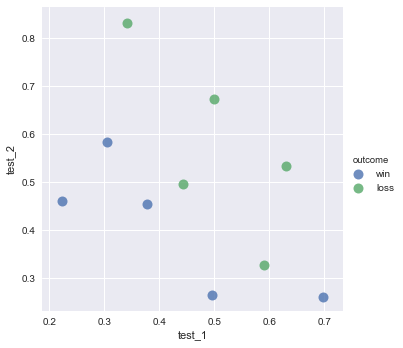

K-Nearest Neighbors Classification
K-nearest neighbors classifier (KNN) is a simple and powerful classification learner.
KNN has three basic parts:
- $y_i$: The class of an observation (what we are trying to predict in the test data).
- $X_i$: The predictors/IVs/attributes of an observation.
- $K$: A positive number specified by the researcher. K denotes the number of observations closest to a particular observation that define its “neighborhood”. For example, K=2 means that each observation’s has a neighorhood comprising of the two other observations closest to it.
Imagine we have an observation where we know its independent variables $x_{test}$ but do not know its class $y_{test}$. The KNN learner finds the K other observations that are closest to $x_{test}$ and uses their known classes to assign a classes to $_{test}$.
Preliminaries
import pandas as pd
from sklearn import neighbors
import numpy as np
%matplotlib inline
import seabornCreate Dataset
Here we create three variables, test_1 and test_2 are our independent variables, ‘outcome’ is our dependent variable. We will use this data to train our learner.
training_data = pd.DataFrame()
training_data['test_1'] = [0.3051,0.4949,0.6974,0.3769,0.2231,0.341,0.4436,0.5897,0.6308,0.5]
training_data['test_2'] = [0.5846,0.2654,0.2615,0.4538,0.4615,0.8308,0.4962,0.3269,0.5346,0.6731]
training_data['outcome'] = ['win','win','win','win','win','loss','loss','loss','loss','loss']
training_data.head()| test_1 | test_2 | outcome | |
|---|---|---|---|
| 0 | 0.3051 | 0.5846 | win |
| 1 | 0.4949 | 0.2654 | win |
| 2 | 0.6974 | 0.2615 | win |
| 3 | 0.3769 | 0.4538 | win |
| 4 | 0.2231 | 0.4615 | win |
Plot the data
This is not necessary, but because we only have three variables, we can plot the training dataset. The X and Y axes are the independent variables, while the colors of the points are their classes.
seaborn.lmplot('test_1', 'test_2', data=training_data, fit_reg=False,hue="outcome", scatter_kws={"marker": "D","s": 100})<seaborn.axisgrid.FacetGrid at 0x11008aeb8>

Convert Data Into np.arrays
The scikit-learn library requires the data be formatted as a numpy array. Here are doing that reformatting.
X = training_data.as_matrix(columns=['test_1', 'test_2'])
y = np.array(training_data['outcome'])Train The Learner
This is our big moment. We train a KNN learner using the parameters that an observation’s neighborhood is its three closest neighors. weights = 'uniform' can be thought of as the voting system used. For example, uniform means that all neighbors get an equally weighted “vote” about an observation’s class while weights = 'distance' would tell the learner to weigh each observation’s “vote” by its distance from the observation we are classifying.
clf = neighbors.KNeighborsClassifier(3, weights = 'uniform')
trained_model = clf.fit(X, y)View The Model’s Score
How good is our trained model compared to our training data?
trained_model.score(X, y)0.80000000000000004
Our model is 80% accurate!
Note: that in any real world example we’d want to compare the trained model to some holdout test data. But since this is a toy example I used the training data.
Apply The Learner To A New Data Point
Now that we have trained our model, we can predict the class any new observation, $y_{test}$. Let us do that now!
# Create a new observation with the value of the first independent variable, 'test_1', as .4
# and the second independent variable, test_1', as .6
x_test = np.array([[.4,.6]])# Apply the learner to the new, unclassified observation.
trained_model.predict(x_test)array(['loss'], dtype=object)
Huzzah! We can see that the learner has predicted that the new observation’s class is loss.
We can even look at the probabilities the learner assigned to each class:
trained_model.predict_proba(x_test)array([[ 0.66666667, 0.33333333]])
According to this result, the model predicted that the observation was loss with a ~67% probability and win with a ~33% probability. Because the observation had a greater probability of being loss, it predicted that class for the observation.
Notes
- The choice of K has major affects on the classifer created.
- The greater the K, more linear (high bias and low variance) the decision boundary.
- There are a variety of ways to measure distance, two popular being simple euclidean distance and cosine similarity.